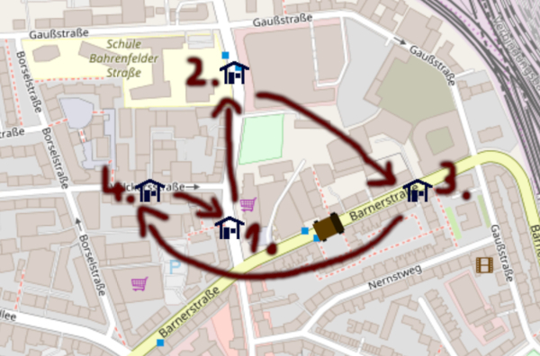
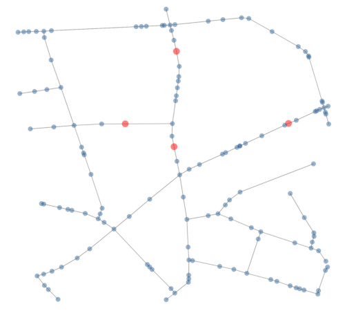
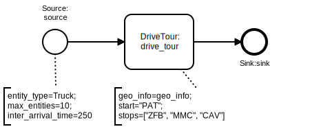

Urban Logistics Network Simulation in Python
Building Anylogic’s GIS-Feature w/ SimPy, OSMnx and Leaflet.js

A really nice and quite unique feature of Anylogic is the possibility to include GIS-maps into simulation models. It allows to place elements on a map and move them along existing routes, based on real spatial information. This is cool because it can be used to simulate entire supply chains, including means to provide a great, tangible visualization for complex problems.
This previous project used Anylogic to evaluate different designs and delivery schemes for a more sustainable urban logistics network in the city center of Grenoble in France. The data-driven simulation model allows to quickly calculate KPIs for various transshipment node locations and different types of transport equipment in a multi-tier supply-chain network.
Following the success of the feature, Anylogic even built anyLogistix, combining pre-built & customizable simulation models with a commercial solver for integrated supply chain planning & optimization.
Obviously, those commercial features come at a price, so let’s see whether this kind of model can also be realized with different means.
The simulation model of this post will be based on a mini-case-study.
Scenario & Scope
Facing the fact that humanity gets more and more used to home-delivery of even everyday necessities, the small French bakery Die Patisserie in Hamburg-Altona wants to deliver sweet pastries to nearby customers.
3 major purchasers were identified: the lost-and-found office Zentrales Fundbüro, Monkeys Music Club, and the publishing house Carlsen Verlag.
Coordinates of the different locations:
| Node | Name | Lat | Lon | |
|---|---|---|---|---|
| 1. | PAT | Die Patisserie | 53.55668 | 9.92815 |
| 2. | ZFB | Zentrales Fundbüro (lost-and-found office) | 53.55817 | 9.92829 |
| 3. | MMC | Monkeys Music Club | 53.55706 | 9.93161 |
| 4. | CAV | Carlsen Verlag (publishing house) | 53.55703 | 9.92684 |
For the sake of simplicity, the order in which nodes are visited is assumed to be fixed. The tour starts & ends at the patisserie:

Simulation Model
The simulation model for the simplistic scenario is created with:
- OSMnx/networkx for retrieving geo-information and calculating shortest-paths
- SimPy/Casymda for simulating the tour
- Leaflet.js for browser-based animation
1. OSMnx
The awesome OSMnx package provides the possibility to obtain a networkx-graph representation of a street-network from OpenStreetMap with a single line of code. A relevant section for our scenario can be obtained by specifying center and distance for osm-nodes to be included:
CENTER = (53.55668, 9.92815)
DISTANCE = 300
G = ox.graph_from_point(CENTER, distance=DISTANCE, network_type='drive')
OSMnx lets us pick the nearest osm-node for each of the 4 locations of the tour, and also offers convenient means to plot the network. Blue dots represent osm-nodes, connected by edges. The 4 relevant locations are shown in red:

To prepare all information needed by the simulation model, now all shortest paths between the 4 relevant nodes in the network are computed with networkx, and detailed information on all piece-wise linear segments for each route is included. The results are pickled and saved to disk to avoid fetching and recalculation for each run of the model (of course its kind to keep the load for the OSM-server as low as possible).
The above described approach could be improved, e.g. by automatically determining the area to be loaded from the given relevant locations. Instead of just picking the closest osm-node for each relevant location, it would also be more precise to first go for the closest edge in the network. And as the network size grows, it might be a better idea to directly query the shortest path between relevant nodes from the OSM-server, instead of fetching the network as a whole (the way Anylogic seems to do it).
2. Casymda/SimPy
Casymda provides block-based modeling of discrete-event-simulation models on top of
SimPy.
Our model can be characterized by a simple process:

A truck is created at a parameterized Source and then processed at a custom DriveTour-block, which contains the logic for elapsing time according to the length of a route and the movement speed of the truck. It also contains the option to calculate intermediate locations for animation. The nodes to be visited are specified via the text-annotation stops=["ZFB", "MMC", "CAV"].
The animation is implemented by exposing information and resources via flask (similar to the tilemap-animation described in the previous post).
3. Leaflet.js
To visualize the location of nodes and entities on a map, Leaflet only requires a few lines. For setting the rotation angle, there is the Rotated.Marker-plugin.
marker = L.marker(element.coords, { icon: new L.Icon({iconUrl: element.icon_path}) }).addTo(map);
marker.bindPopup(element.text);
marker.setRotationAngle(element.direction);
Result
To run the simulation via http://localhost:5000:
docker-compose up geo-web-animation
The screencast below shows a complete tour of a truck visiting all nodes in the defined order (Patisserie - Lost-and-found - Monkey’s - Carlsen Publishing - Patisserie).
The one-way street Völckersstraße is correctly taken into account when moving from Monkeys Music Club (3., right-most node) to Carlsen Verlag (4., left-most node).
Of course there are numerous improvements and extensions imaginable, including e.g. the calculation of more realistic driving times based on actual speed limits which are already part of the available OSM-data.